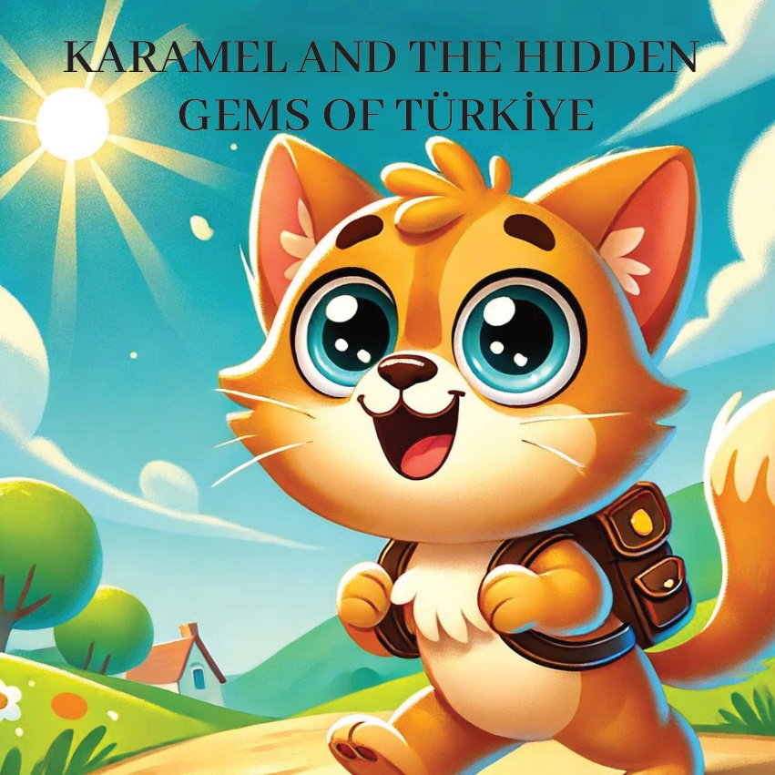

1

2

3
Карамель, цэкаватая і цэліใต้кавая котка,
хацела даследаваць схаваныя дараснасці Тюрэкі.
Яна вырашыла наведаць менш вядомыя, але прыгожыя
і значныя месцы па ўсім краіне.
З 흥вэкамі ў сэрцы,
яна адправілася ў новае прыгода.
4
5
Амыся
Першаю прыпырку Карамель зрабіла ў Амысі,
горадзе, вядомым сваімі цудоўнымі хатамі эпохі Асманскай імперыі
і скаламі цароў Понтскай імперыі.
Яна здзіўлялася спалучэнню прыроды і гісторыі.
6
7
Мардын
Далее Карамель падарожнічала ў Мардын,
горад, славуты сваёй унікальнай архітэктурай
і цудоўным выглядам.
Яна правяла час, вывучаючы старадаўнія камяняныя хаты
і вузкія вуліцы.
8
9
Ахлат
Карамель наведалася ў Ахлаце,
знаным з сваіх гістарычных надгробкаў
і цудоўных выглядаў на раку.
Яна даведалася пра старажытны
сельчюкскі купалак і багатую
гісторыю раёну.
10
11
Манастир Сумела – Трабзон
У Трабзоне
Карамел адкрыла манастыр Сумела,
размешчаны на высокім скале.
Яна была зачаравана цудоўным
размешаньнем манастыра і гістарычнай значнасцю.
12
13
Гобекли-Тепе - Шанлыурфа
Наступнай прыпыркі Карамелі была Гобекли-Тепе,
самы стары ў свеце вядомы храмавы комплекс.
Яна даследавала старажытныя руіны
і пазнаёмілася з цікавай гісторыяй ранняй чалавечай цывілізацыі.
14
15
Егірдыр Купу - Іспарта
Карамел паспела наведаць егірдырскае раўніну, адно з найвялікіх і найлепшых раўнін Тюркок. Яна задаволілася мірапакоемным пейзажам і яркімі колерамі навакольнай прыроды.
16
17
Сафраноболу
Нарешті Карамель дісталася Сафраноболу,
города, відомого своїм добре збереженим
османським архітектурою.
Вона досліджувала чарівні вулички
і історичні будівлі.
18
19
З сэрца напоўнена цудаў і розуму паляпшанага схаванымі сапрывасцамі Тюркояй, Карамель вярнулася дадому. Яна астралі, што гэтыя менш вядомыя месцы – гэта скарбы, якія чакаюць адкрыцця.
20
21
22